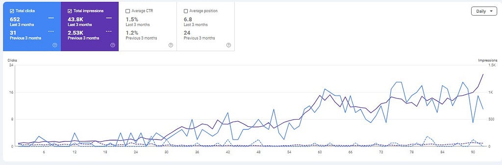

الرعاية الصحية
بداية هيلث
عملت مع بداية هيلث على تحسين ظهور الصفحات الطبية في نتائج البحث وتجربة تصفّحها على الهاتف.
109K نقرات من البحث العضوياقرأ دراسة الحالةخمسة مشاريع أشرح فيها من أين بدأت، وما نفّذته، وكيف تغيّر الأداء في Google Search Console.
عملت مع بداية هيلث على تحسين ظهور الصفحات الطبية في نتائج البحث وتجربة تصفّحها على الهاتف.
109K نقرات من البحث العضوياقرأ دراسة الحالة
راجعت مشكلات فهرسة موقع Botsmsg، وطوّرت صفحات خدمات الأتمتة لتناسب ما يبحث عنه العملاء.
31 652 نقرات من البحث العضوياقرأ دراسة الحالة
نظّمت محتوى موقع د. كريم شلوة حول الأسئلة التي يطرحها المرضى عن الأعراض والإجراءات الطبية، وربطت الصفحات المتصلة ببعضها.
160K مرات الظهوراقرأ دراسة الحالة
ساعدت موقع Right Nutritions على بناء حضور في البحث، عبر محتوى تغذوي يستند إلى مصادر علمية وروابط تقود إلى المنتجات ذات الصلة.
434 نقرات من البحث العضوياقرأ دراسة الحالة
حسّنت صفحات تصنيفات الأثاث المستعمل لتناسب البحث المحلي عن الشراء والبيع، وعملت على تجربة التصفح من الهاتف.
79 271 نقرات من البحث العضوياقرأ دراسة الحالة